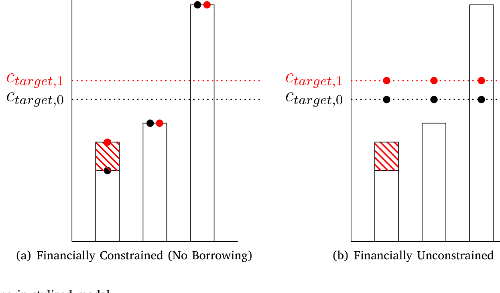
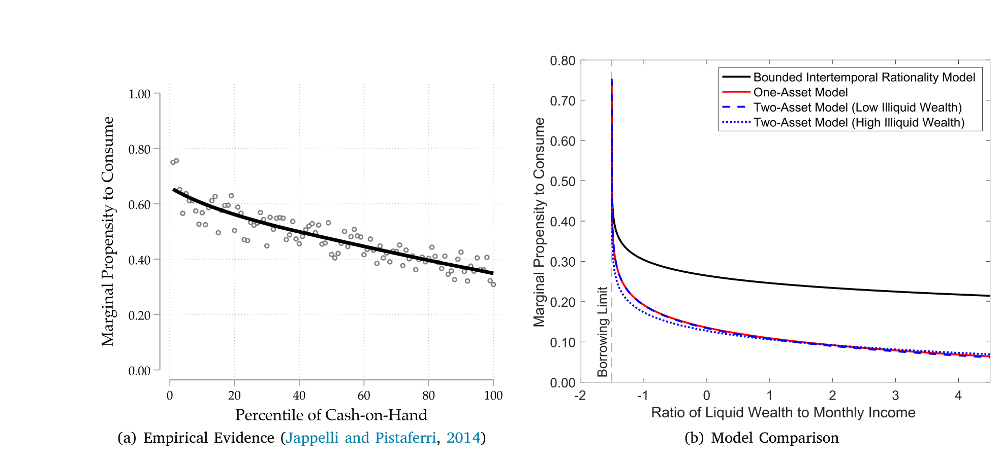
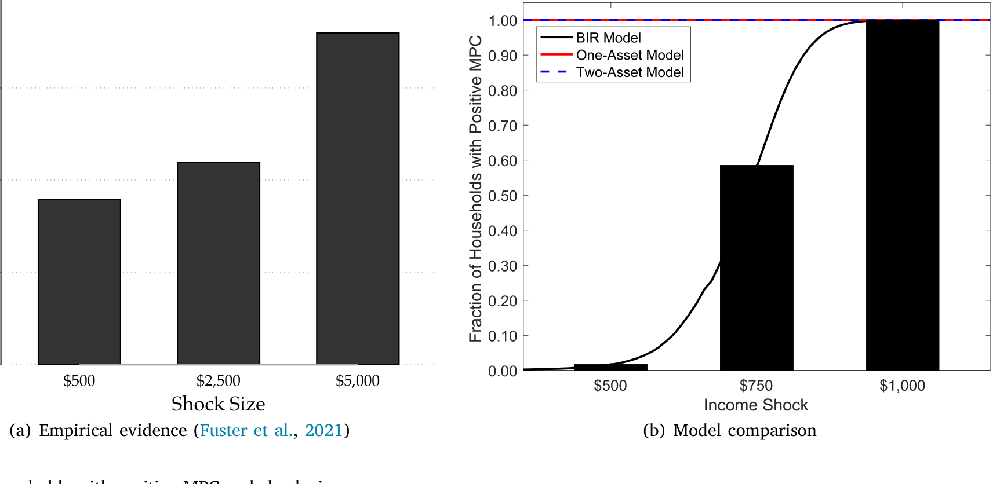
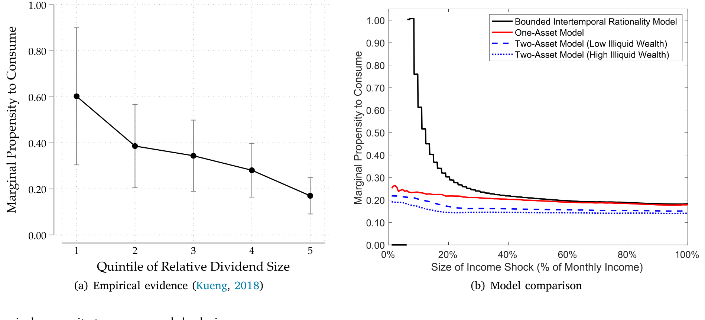
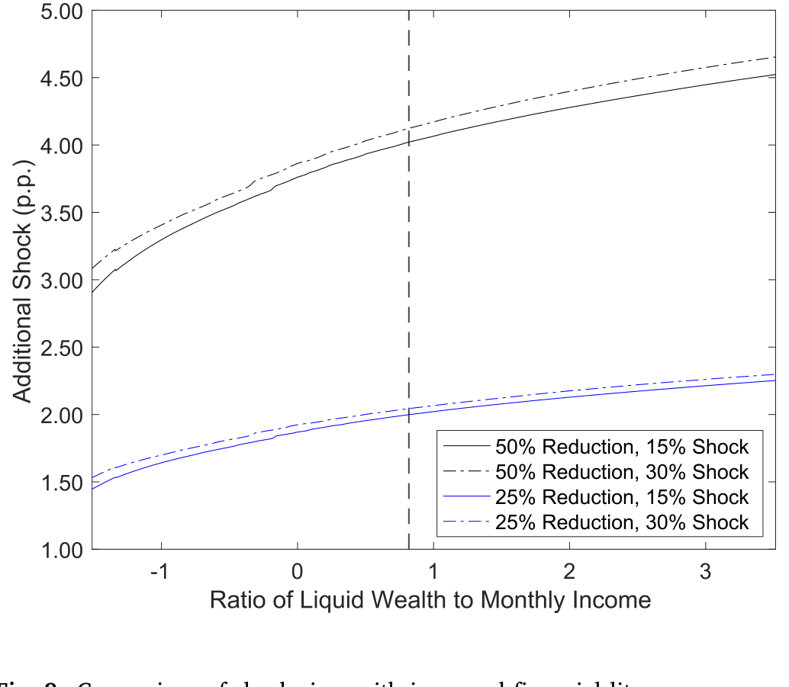
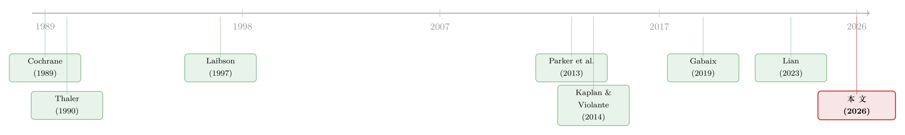

想清楚一笔意外之财，是要花脑力的——有限规划期限下的消费之谜
本文读的是 Boutros (2026, Journal of Financial Economics)：作者把「做财务规划本身是要耗费脑力的」这件事正式写进模型——家庭面对一笔意外之财时，会主动挑一个有限的规划期限去重新安排消费，在「多平滑几期」的好处与「多想几期」的认知成本之间权衡。这个看似朴素的设定，竟然一口气解释了三个标准模型搞不定的经验事实：连手头很宽裕的家庭也会大手大脚地花掉意外之财；冲击越大、会动用它去消费的家庭比例越高；可一旦决定花，冲击越大、消费占比反而越低。
1 引言：一个连「不差钱」的人也会露馅的谜题
先想象一个场景。你突然收到一笔一千美元的退税，或者一位远房亲戚留下的一小笔遗产。标准金融理论会怎么预测你的反应？
答案干净得近乎冷酷：你是一个完全理性的终身规划者。你会把这一千美元摊到你余生的每一期消费里去，平滑得不留一丝痕迹。如果你手头有足够的流动性，那么今天、明天、十年后、退休后，你的消费都会因为这一千美元而几乎均匀地抬高那么一丁点。在这套叙事里，只有那些被借贷约束卡住的穷人——手停口停、想借却借不到的家庭——才会拿到钱就花光。换句话说，高的边际消费倾向 (marginal propensity to consume, MPC) 应该是「缺钱」的代名词。
可数据偏偏不买账。
一个反复被记录下来的尴尬事实是：很多手头明明很宽裕、流动资产一点都不缺的家庭，拿到意外之财照样花掉一大半。他们不是借不到钱，他们就是花了。标准的「光滑、凹」的消费函数对此束手无策——因为按那套逻辑，富人多一块钱的边际效用很低，根本没有理由把它一股脑花掉。
于是，一个自然的问题就冒出来了：如果不是「缺钱」，那到底是什么，让这些不差钱的人也表现得像个「月光族」？
Boutros 这篇文章给的答案，不在钱包里，而在脑子里。
2 核心直觉：平滑消费，是要「想」的
标准模型有一个被所有人默认、却几乎没人正视的隐含假设：重新做一遍终身消费规划，是免费的。收到一块钱，立刻重算余生几百期的最优消费路径——这在数学上轻而易举，在现实里却荒唐。
现实是，做财务规划是一件极其耗费认知的事。要不要把这笔钱存起来？存哪儿？动用它会不会打乱原本的预算？要往后想几年？心理学和金融学的大量证据都指向同一点：人们的规划是「有限期限」的。调查里反复发现，家庭做计划时心里真正考虑的时间跨度很短，而且这个跨度会随着年龄、教育、健康、财务状况而变（Fisher and Montalto, 2010；Hong and Hanna, 2014）。Hong and Hanna (2014) 甚至直接指出，规划期限「更像是一个情境变量，而非一个恒定的时间偏好」。
这就是全文的支点。作者把这种「想得有多远」的认知负担，命名为规划成本 (planning cost)，并由此提出一个新的机制：有界跨期理性 (bounded intertemporal rationality, BIR)。
BIR 把两块行为金融的积木拼在了一起：一是心理账户 (mental accounting)——意外之财和日常工资被记在不同的「账本」上，彼此不可通约 (non-fungible)，所以意外之财天然要求你重新规划；二是有限规划期限——你会主动选一个时间跨度 \(N\)，只在这 \(N\) 期里重新优化、平滑这笔钱，过了这段又退回原来的计划。
接着，一个关键的转折出现了。心理学里早有「局部加工 vs. 全局加工 (local vs. global processing)」之分（Navon, 1977；Forster and Dannenberg, 2010）：看见一片树叶，还是看见整片森林。Boutros 把这对概念翻译成了消费决策的语言——
- 小额冲击 → 触发「局部思考」→ 规划期限短 → 平滑得少（很快花掉）；
- 大额冲击 → 值得「全局思考」→ 规划期限长 → 平滑得多（摊到更久）；
- 极大冲击 → 期限拉到无穷 → 退化回标准模型的终身平滑。
这就为「为什么富人也乱花钱」埋下了伏笔：富人不缺流动性，但对一笔不大不小的意外之财，他懒得动用宝贵的脑力去精算——花掉它，反而是认知上「划算」的选择。
（关于「一块钱不再等于一块钱」、心理账户如何破坏货币可通约性，本博客此前评过一篇很相关的文章，可参见《钱的温度：当「一块钱永远等于一块钱」不再成立》。）
3 模型：把「权衡」写成方程
这是一篇结构模型论文，模型的骨架值得一步步拆开看。
3.1 先看没有规划成本的「标准世界」
在完全理性的基准里，家庭最大化终身贴现效用，约束是终身预算：
$$ \max_{\{c_t\}_{t=0}^{T}} \; \sum_{t=0}^{T} \beta^t\, u(c_t) \qquad \text{s.t.} \qquad \sum_{t=0}^{T} \frac{c_t}{(1+r)^t} \;\le\; \sum_{t=0}^{T} \frac{y_t}{(1+r)^t}. $$
在标准偏好下，多平滑一期消费的边际收益永远严格为正。所以一旦规划是免费的，家庭就一定会把任何一笔钱摊到余生所有期——这正是文中所说的「无穷规划期限」。
作者用一个三期的风格化模型 (illustrative model) 把这件事画了出来（如图 1 所示）。一个收入随时间上升的家庭，有一条由终身收入决定的消费目标线 \(c_{target,0}\)。在能自由借贷的面板里，家庭每一期都把消费顶到目标线；在借贷受约束、借不到钱的面板里，前两期只能「手停口停」地把消费压到等于当期收入。这两个极端，恰好是标准文献里讨论 MPC 的两副面孔。

Figure 1: Consumption smoothing in stylized model
3.2 真正关键的一步：把「想几期」变成一个选择
但真正关键的一步在于：作者给规划本身标了价。
意外之财 \(W\) 到账后，家庭不再默认把它摊到余生，而是要主动选一个有限期限 \(N\)：只在接下来的 \(N\) 期里把这笔钱平摊进消费，之后回到原计划。摊得越久（\(N\) 越大），消费越平滑，效用收益越高，但收益是递减的；与此同时，规划成本 \(\kappa(N)\) 随 \(N\) 递增——想得越远越费脑子。家庭要做的，就是在这两者之间找到那个最优的 \(N^\star\)：
这个看似简单的权衡，蕴含了全文最重要的理论命题：
最优规划期限 \(N^\star\) 同时随收入 \(y\)、财富 \(a\) 与冲击规模 \(W\) 递增。
为什么？因为平滑消费的边际效用，对越富的人越高——富人本来消费就高、边际效用曲线更平，多摊一期带来的福利改善反而更值得他付出脑力去规划。而冲击越大，平滑的总收益越可观，自然也值得想得更远。这一条命题，是后面所有经验解释的总开关。
注意一个反直觉之处：穷人从一笔意外之财里获得的绝对福利改善更大（他更需要这笔钱），但真正会因为「规划变便宜」而受益的，反而是富人——因为是富人更愿意、也更有动力去多做规划。这一点在后文的金融素养政策里会再次反转我们的直觉。
4 三个事实，一个机制
模型的威力，要看它能不能同时解释那些「单打独斗」的模型解释不了的事。Boutros 锁定了三个经验事实。
事实一：连高流动性家庭也有很大的 MPC。
如果 MPC 高只是因为缺钱，那么流动资产一多，MPC 就该掉下去。可数据里，即便在流动财富很高的区间，MPC 依然显著为正、甚至不小。在 BIR 模型里这毫不奇怪：富人不缺钱，但面对中等规模的意外之财，他选了一个短规划期限——懒得精算，于是花掉一大块。借贷约束在这里完全不是主角（如图 5 所示，MPC 与流动财富的关系并不像标准模型预测的那样一路陡降）。

Figure 5: Marginal propensity to consume and liquid wealth
事实二：冲击越大，会动用它去消费的家庭比例越高（广延边际为正）。
这是广延边际 (extensive margin)：有多大比例的家庭对冲击有「非零」反应。数据显示，冲击越大，这个比例越高。直觉上也对——一笔小钱，很多人压根不当回事、不重新规划（反应为零）；而一笔大钱，几乎逼着每个人都得动一动算盘（如图 6 所示）。

Figure 6: Fraction of households with positive MPC and shock size
事实三：可一旦决定花，冲击越大、消费占比反而越低（集约边际为负）。
这是集约边际 (intensive margin)：在那些确实有反应的家庭里，反应的强度（即 MPC 本身）随冲击规模下降。这正是 \(N^\star\) 随 \(W\) 递增的直接推论：大冲击让人选更长的规划期限，于是这笔钱被摊得更薄，单位冲击对应的当期消费占比反而更小（如图 7 所示）。

Figure 7: Marginal propensity to consume and shock size
作者反复强调的是：「广延边际为正」与「集约边际为负」这两件事同时成立，是任何光滑、凹的消费函数都无法解释的。一个光滑凹函数要么让大冲击的 MPC 整体更高、要么更低，做不到「参与的人更多、但每个人花得占比更少」这种方向相反的组合。而 BIR 的「先选期限、再平滑」两层结构，天生就能。一个机制，三个事实，这是全文最漂亮的地方。
5 识别与校准：把脑力的价格「量」出来
模型很美，但 \(\kappa(N)\) 这个规划成本函数到底长什么样？这需要数据来钉死。
作者的策略是用 2008 年经济刺激金 (economic stimulus payments, ESPs)，借助广义矩估计 (generalized method of moments, GMM) 来校准规划成本。这套数据的妙处在于：同样一笔钱，对不同收入的家庭意味着的「相对规模」天差地别，恰好能识别出「冲击相对规模 → 规划期限 → 消费反应」这条链。
结果与模型的预测高度吻合，而且方向恰恰和借贷约束的故事相反：
- 收入最低的第一组（first tercile）：拿到的 ESP 大约只相当于其月收入的
11%，却在到账三个月内全部花光。而这群人恰恰是收入最高、最富有的家庭——一笔相对零头的钱，不值得他们费心规划，花掉了事。 - 收入最高的第三组（third tercile）：拿到的 ESP 大约相当于半个月收入，三个月内只花掉了一半。这群人收入最低、流动财富最少——按理说最该「拿钱就花」，可他们反而把钱留下了一半。
最后这一点，正是对借贷约束假说的致命一击：最穷、最缺流动性的人，反而没有把钱花光。在标准模型里这说不通；在 BIR 里却顺理成章——对他们而言，这是一笔相对庞大的意外之财，值得他们认真规划、拉长期限、慢慢平滑。
为了不让校准变成「自说自话」，作者还用 Gelman (2021) 的外部数据做了外部验证 (out-of-sample validation)，并把校准后模型生成的消费反应分布，与同样校准的单资产、双资产完全理性模型作对比，凸显 BIR 在匹配上述三个经验谜题上的独到之处。
6 把模型当实验室：两个政策应用
校准好的模型，作者拿它当「实验室」跑了两个很有现实味道的政策实验。
第一，财政刺激怎么发，才能最大化总消费反应？
既然规划成本是给定的，那么把钱发给「会选短期限、从而 MPC 高」的人，刺激效果就最好。作者以 2008 年的真实刺激方案为基准，做了一个再分配实验：对中间 50% 收入家庭每户减发 \$300，对最低 25% 收入家庭每户增发 \$600。结果是总消费反应提高了将近 5 个百分点，即 17.4%。而这个提升主要来自对中等收入家庭减发——少了那笔钱，他们如今会选择更短的规划期限，于是剩下的钱花得更猛。这是一个相当反直觉的政策含义：给中产「少发一点」，整体刺激效果反而更强。
第二，提高金融素养，谁更受益？
如果 BIR 至少部分源于金融素养 (financial literacy) 的欠缺，那么一个能降低规划成本的教育项目，相当于变相发钱。作者算出：规划成本下降 25%，对受约束家庭相当于把意外刺激金提高 1.5 个百分点，对最富有家庭则相当于提高 2.1 个百分点（如图 8 所示，金融素养提升后冲击规模的对比）。

Figure 8: Comparison of shock sizes with increased financial literacy. shocks. I label the households in my model as displaying bounded
注意这里的福利分配反转：福利改善对越富的家庭越大。原因回到第 3 节那条命题——消费的边际效用对穷人更高（穷人更需要这笔钱本身），但平滑消费的边际效用对富人更高，所以是富人更能从「规划变便宜」里榨出福利。穷人受益于「钱」，富人受益于「想得起」。
（关于金融素养的因果效应如何被干净地识别出来，本博客此前评过一篇用断点回归做高中理财课的文章，可参见《一门高中理财课，能让金融犯罪少三成？》。）
7 文献脉络
要看清这篇文章站在哪儿，得把这条研究线捋一遍。
最上游是两股力量。一股是心理账户：Thaler (1990) 提出「钱是有标签的」，意外之财和日常收入被记在不同账本上、彼此不可通约——这是本文「为什么意外之财必须重新规划」的根基。另一股是有界理性下的近似理性：Cochrane (1989) 证明，偏离完全理性的消费行为，福利代价通常很小——这等于给「人们为什么可以、也愿意偷懒不精算」开了一张许可证。
接着，行为机制开始往「为什么 MPC 这么高」上发力。Laibson (1997) 的双曲贴现，让人变得更没耐心；Gabaix (2019) 的行为忽视 (behavioral inattention)、以及 Lian (2023) 关于「对未来消费的误判会抬高当下 MPC」的框架，都试图通过改变消费函数来制造大 MPC。但它们大多是外生地设定「人有多看重未来」。

与此并行的是宏观 MPC 这条主线：Parker et al. (2013) 用 2008 年刺激金估出，三个月内总消费反应高达 50%–90%；Kaplan and Violante (2014) 的双资产模型 (two-asset model) 则靠引入一种流动性差的第二资产，制造出大量「富有的手停口停者 (wealthy hand-to-mouth)」，从而同时匹配财富分布与总 MPC。这一支的共同点是：靠提高「受约束家庭」的比例来做大消费反应。
本文 (Boutros, 2026) 的位置因此很清楚：它不去拨弄借贷约束，而是内生化「人到底要把未来贴现多少、想多远」这个决策——而且让这个决策随家庭、随冲击而变。最贴近它的是 Graham and McDowall (forthcoming) 的心理账户模型，但那篇靠「厌恶储蓄」的偏好驱动行为；本文则坚持标准偏好，把一切交给「规划期限」这个内生选择。这是它与整条文献最干净的分野。
8 评论与延伸（Q&A + 研究方向）
(a) 几个可能的疑问
Q：BIR 和「现时偏误 (present bias)」到底有什么不同？两者都让人变得短视。
区别在于「短视是外生还是内生」。现时偏误（如 Maxted et al., 2024 的双曲贴现、Attanasio et al., 2024 的诱惑）把「更没耐心」当成一个固定的偏好参数，对所有冲击一视同仁地放大 MPC，并主要通过制造更多受约束家庭起作用。BIR 里家庭偏好是标准的，「短视」是针对每一笔具体冲击、内生选出来的规划期限——小冲击短视、大冲击远视。所以只有 BIR 能同时产出「广延边际为正、集约边际为负」这对方向相反的效应。
Q：把「规划成本」只挂钩到「规划期限」，是不是过度简化？
作者自己也承认这是简化——现实里规划成本还取决于资产种类、信息复杂度等等。但这个简化是有意的：它把模型的全部张力集中到一个可识别、可校准的维度上。代价是模型对「规划的其他维度」保持沉默；好处是它换来了一个能被 GMM 钉死、并能外部验证的干净结构。
Q：用 2008 年刺激金校准，会不会是「危机时期」的特例，外推性存疑？
这是合理的担忧。2008 是衰退期，家庭的预防性动机、对未来的悲观都可能偏高，校准出的规划成本未必适用于平时。作者用 Gelman (2021) 的外部数据做验证，部分缓解了这一点；但严格地说，跨周期的稳健性仍是开放问题。
Q：「最穷的人反而没把钱花光」，会不会只是因为他们拿到的钱（相对）更大，所以攒着应急？
这恰恰是关键的识别点，而非反例。在标准借贷约束模型里，最缺流动性的家庭 MPC 应该最高、最该花光；他们却留下一半，直接证伪了「高 MPC = 缺钱」。BIR 的解释是：相对庞大的意外之财值得他们认真规划、拉长期限——是「想得更远」而非「不缺钱」让他们存了下来。
Q：模型说富人从金融素养项目里受益更大，这对「金融教育应该扶贫」的直觉是不是打脸？
是的，而且这是本文一个诚实又微妙的含义。穷人从意外之财的本金里获益更大（边际消费效用高），但富人从「规划变便宜」里获益更大（平滑的边际效用高、也更愿意为规划付费）。这提醒政策制定者：降低规划复杂度的金融产品，受益者画像可能和「发钱」的受益者画像正好相反。
Q：这套机制能不能搬到信用市场、外资持有人这类资产端的问题上？
原则上可以。本文的内核是「重新优化是有认知成本的，于是主体选一个有限的『关注/调整期限』」。任何「调整有成本、且主体异质」的市场——比如债券持有人面对评级变动是否重新配置、外资在汇率或政策冲击后多久才调仓——都能套用类似的「有限规划期限」框架，详见下面的研究方向。
(b) 几个可能的研究问题与提案
1. 公司债持有人的「有限规划期限」
【经济故事】机构持有人面对评级下调、利差跳变这类「意外冲击」时，重新优化组合同样有认知/操作成本。是否也存在「小冲击不动、大冲击才全面调仓」的广延/集约边际反转？这能把 BIR 从家庭搬到机构。
【可行性】中。可用 eMAXX / TRACE 持仓与交易数据，事件研究法围绕评级行动构造「冲击规模」，看调仓的广延边际（是否调）与集约边际（调多少）随冲击规模的关系。难点是把「认知成本」与「合规/久期约束」分离开。
2. 外资持有人的「规划期限」异质性
【经济故事】外资相对本土投资者，对当地市场的「规划成本」更高（信息更远、关注更稀）。BIR 预测外资应表现出更短的有效规划期限——对小冲击更迟钝、对大冲击才反应。这可解释外资「追涨杀跌」与「黏性持有」并存的矛盾。
【可行性】中。可用美国公司债的外资持仓（TIC 数据）配合货币政策/汇率冲击，比较外资与本土机构在不同冲击规模下的调仓概率与幅度。识别难在外资持仓的频率与匹配。
3. 意外之财与流动性供给
【经济故事】若大量家庭在收到刺激金后「短期限、快花光」，这笔需求脉冲会如何传导到他们持有的流动资产（货币基金、短债）的赎回与定价？把家庭侧的 BIR 与资产侧的流动性冲击连起来。
【可行性】中偏低。需要把家庭刺激金到账时点与基金流/短端利差对齐，数据拼接难度大，但若能找到刺激金发放的地区/时点错位，识别可行。
4. 「规划成本」能否被直接测量？
【经济故事】本文的规划成本是 GMM 反推出来的隐变量。能否用个人理财 App（如 Olafsson and Pagel, 2018 用过的数据）里「用户多久查看/调整一次预算」作为规划期限的直接代理，从而绕开结构反推？
【可行性】高。理财 App 数据里有明确的「登录、查看、调整」行为戳，可直接构造规划频率，再与意外收入到账事件叠加，做约化式检验。是把本文结构假设「外部证据化」的一条快路。
5. 标签与框架如何改变规划期限
【经济故事】Epley et al. (2006) 发现叫「bonus」比叫「rebate」更刺激消费；Beatty et al. (2014) 发现「取暖补贴」之名让近一半的钱真被花在取暖上、而无标签时只有 3%。这些标签是否正是通过改变「规划期限」起作用的？
【可行性】高。可设计实验，随机化转移支付的标签与（自然语言提示的）规划期限，观测 MPC 的广延/集约边际是否如 BIR 预测的那样移动。实验室或田野均可，doable。
我的判断
这篇文章最大的贡献，是把一个所有人都默认、却几乎没人正面建模的假设——「重新规划是免费的」——正式标价并内生化，再用一个极简的「先选期限、后平滑」两层结构，一口气拿下了三个互相拉扯、标准模型按下葫芦浮起瓢的经验事实。「一个机制解释三件事」本身就是结构模型最有说服力的成色。把它放进 Kaplan-Violante 以来「靠做大受约束群体来抬高总 MPC」的主流里看，它提供了一条与借贷约束正交的新通道，这对宏观 HANK 类模型的微观基础是有真实增量的。
我的主要保留意见在识别。核心识别来自 2008 刺激金里「同一笔钱、相对规模因人而异」的横截面变异，但「相对规模大」与「收入低、财富少、预防性动机强」高度共线——把消费反应归因于「规划期限」而非「衰退期的预防性储蓄」，需要更强的排他性论证。GMM 校准 + Gelman (2021) 外部验证缓解了一部分，但终究是结构内的检验，而非一个干净的外生实验。
后续我最想看到的，是对「规划期限」本身的直接、非结构化测量——比如用理财 App 的行为戳，或用随机化的标签/期限提示实验，把这个隐变量从「GMM 反推」变成「能被独立观测和操纵」的东西。如果那时它依然能复现出「广延边际为正、集约边际为负」这对指纹，BIR 才算真正从一个优雅的解释，长成一个可证伪的机制。
参考文献
- Arkes, H. R., Joyner, C. A., Pezzo, M. V., Nash, J.-G., Siegel-Jacobs, K., Stone, E. (1994). The psychology of windfall gains. Organizational Behavior and Human Decision Processes 59, 331–347.
- Beatty, T. K. M., Blow, L., Crossley, T. F., O'Dea, C. (2014). Cash by any other name? Evidence on labeling from the UK Winter Fuel Payment. Journal of Public Economics 118, 86–96.
- Boutros, M. (2026). Windfall income shocks with finite planning horizons. Journal of Financial Economics 176, 104174.
- Cochrane, J. H. (1989). The sensitivity of tests of the intertemporal allocation of consumption to near-rational alternatives. American Economic Review 79(3), 319–337.
- DellaVigna, S. (2018). Structural behavioral economics. In Handbook of Behavioral Economics: Applications and Foundations 1, Vol. 1, North-Holland, pp. 613–723.
- Epley, N., Mak, D., Idson, L. C. (2006). Bonus or rebate? The impact of income framing on spending and saving. Journal of Behavioral Decision Making 19, 1–15.
- Fisher, P. J., Montalto, C. P. (2010). Effect of saving motives and horizon on saving behaviors. Journal of Economic Psychology 31(1), 92–105.
- Gabaix, X. (2019). Behavioral inattention. In Handbook of Behavioral Economics, Vol. 2, Elsevier, pp. 261–343.
- Gelman, M. (2021). What drives heterogeneity in the marginal propensity to consume? Temporary shocks vs persistent characteristics. Journal of Monetary Economics 117, 521–542.
- Hong, E., Hanna, S. D. (2014). Financial planning horizon: A measure of time preference or a situational factor? Journal of Financial Counseling and Planning 25(2), 184–196.
- Kaplan, G., Violante, G. L. (2014). A model of the consumption response to fiscal stimulus payments. Econometrica 82(4), 1199–1239.
- Laibson, D. (1997). Golden eggs and hyperbolic discounting. Quarterly Journal of Economics 112(2), 443–477.
- Lian, C. (2023). Mistakes in future consumption, high MPCs now. American Economic Review: Insights.
- Navon, D. (1977). Forest before trees: The precedence of global features in visual perception. Cognitive Psychology 9(3), 353–383.
- Parker, J. A., Souleles, N. S., Johnson, D. S., McClelland, R. (2013). Consumer spending and the economic stimulus payments of 2008. American Economic Review 103(6), 2530–2553.
- Thaler, R. H. (1990). Anomalies: Saving, fungibility, and mental accounts. Journal of Economic Perspectives 4(1), 193–205.